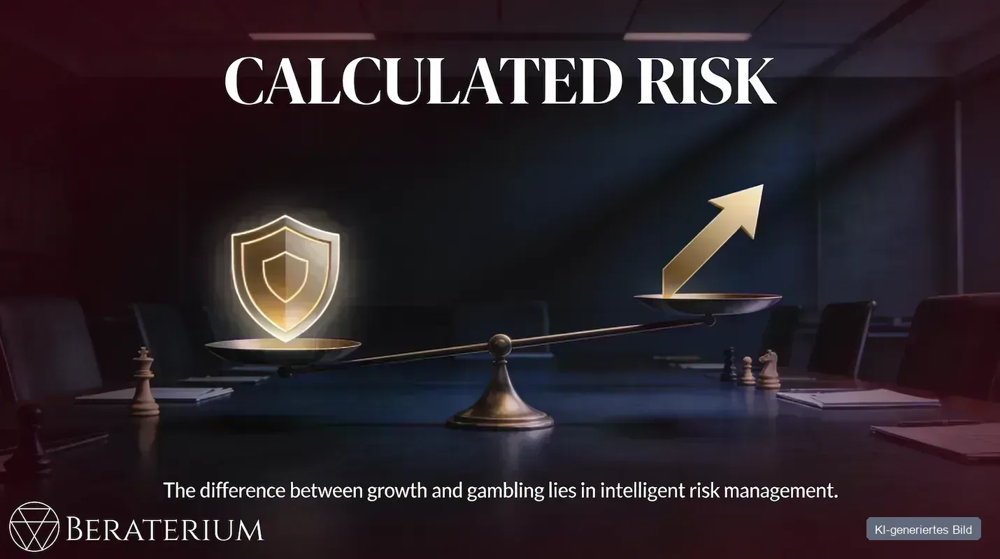
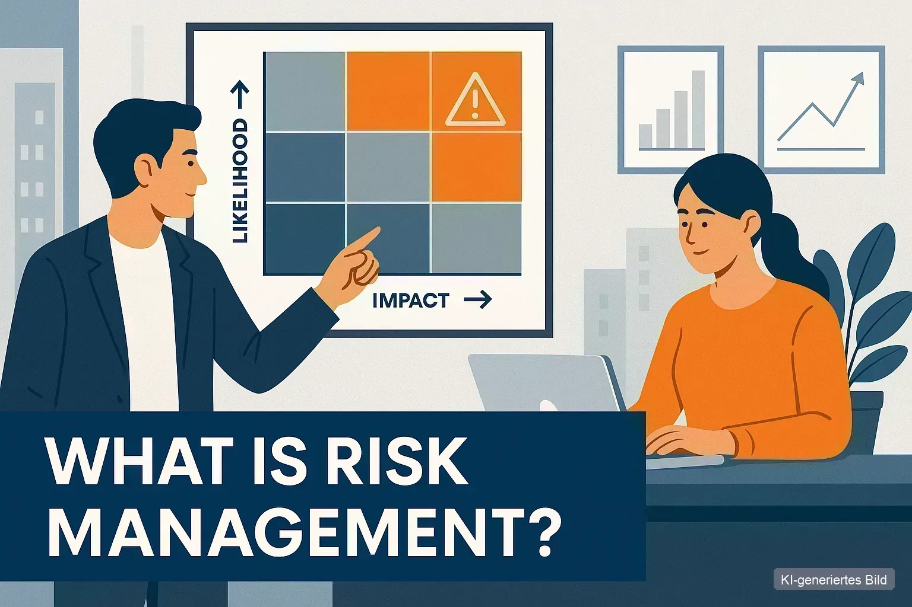

BERATERIUM-BLOG
Risiko verständlich gemacht
Praxiswissen zu Risikomanagement, Unternehmensrisiken, HR und Führung – ohne Berater-Kauderwelsch. Für Menschen, die ihr Unternehmen sicher in die Zukunft führen wollen.
Alle Artikel
30 Beiträge zu Risikomanagement, Führung und Unternehmenspraxis.
-
Modern German office desk with a glowing AI interface beside official EU and German regulation documentsRisikomanagement
KI-Verordnung in Deutschland: Was seit 2. August 2026 für Unternehmen gilt
Die EU-KI-Verordnung gilt seit 2. August 2026 in Deutschland — mit Transparenzpflichten, Bußgeldern bis 35 Mio. Euro und Bundesnetzagentur als…
Weiterlesen → -
Risikomanagement
KI im Unternehmen: Agenten, Chancen und das Risiko der diffundierten Verantwortung
KI-Agenten versprechen Tempo — ohne Prozess und Verantwortung werden sie zum Risiko. Gründer und KMU nutzen Chancen, wenn Menschen im Zentrum bleiben.
Weiterlesen → -
 Risikomanagement
RisikomanagementSchlüsselpersonrisiko: erkennen, bewerten und absichern – für KMU, Startups und Solo-Selbstständige
Das Schlüsselpersonrisiko trifft KMU, Startups und Solo-Selbstständige unterschiedlich hart. So erkennst du unverzichtbare Personen – und sicherst…
Weiterlesen → -
 Solo
SoloWas sind die größten Risiken für Selbstständige und Freelancer – und wer hilft dabei?
Die drei größten Risiken für Selbstständige: Ausfall der Arbeitskraft, Kundenkonzentration und Scheinselbstständigkeit. So erkennen Sie – und wer…
Weiterlesen → -
 KMU
KMUWelche Risiken werden bei der Unternehmensnachfolge im Mittelstand am häufigsten übersehen?
Bei der Nachfolge treffen Wissenstransfer, Führungsakzeptanz und Finanzierung zusammen. Diese Risikofelder werden vor der Übergabe am häufigsten…
Weiterlesen → -
Solo
Was ist Scheinselbstständigkeit – und wie prüfe ich, ob ich betroffen bin?
Scheinselbstständigkeit erkennen – die wichtigsten Kriterien, die 83-%-Faustregel, der Ablauf der Statusfeststellung und was eine Nachforderung…
Weiterlesen → -
 KMU
KMURisikomanagement-Beratung für KMU: Welcher Anbieter passt zu welchem Unternehmen?
Risikomanagement-Beratung im Mittelstand: vier Anbietertypen von Big-4-Prüfern bis Eigenregie – welcher zu Ihrem KMU passt und woran Sie das erkennen.
Weiterlesen → -
KMU
Cyberangriff auf mein Unternehmen – was tun? Soforthilfe für KMU
Nach einem Cyberangriff zählen die ersten 2 Stunden. Die Sofortmaßnahmen-Checkliste für KMU, Meldepflichten und Fristen – plus Prävention ohne…
Weiterlesen → -
 KMU
KMUWas ist eine Cashflow-Analyse – und wie hängt sie mit Risikomanagement für KMU zusammen?
Eine Cashflow-Analyse zeigt, ob Ihr Unternehmen laufende Zahlungen decken kann – unabhängig vom Gewinn. Sie macht Liquiditätsrisiken im KMU früh…
Weiterlesen → -
 Risikomanagement
RisikomanagementZeit als Risikofaktor: Was Unternehmer über Zeitverlust wissen müssen
Zeit ist knappes Kapital im Betrieb. Folge 18.02 des Risiko Radar zeigt, warum falscher Zeiteinsatz Fehler wahrscheinlicher macht — und was hilft.
Weiterlesen → -
 Risikomanagement
RisikomanagementTheorie und Praxis im Risikomanagement: Wenn Standards auf Papier bleiben
Standards, Zertifikate und Verträge beschreiben oft eine perfekte Welt — im Betrieb wird interpretiert, angepasst oder übergangen. Folge 18 ordnet…
Weiterlesen → -
 KMU
KMUEmotionale Führung und das Eisbergmodell: Was unter der Oberfläche Unternehmensrisiken steuert
Das Eisbergmodell aus der Folge meint nicht „schlechte Unternehmer“, sondern: Sichtbar gearbeitet wird oft mit dem kleinen oberen Teil – Wissen,…
Weiterlesen → -
 KMU
KMUFamiliennachfolge und Generationskonflikt: Was nach der formalen Übergabe alles schiefgehen kann
Viele Konflikte nach der Nachfolge sitzen nicht im Gesellschaftsvertrag, sondern in Rollen, Identität und unklarer Führung – das ist ein…
Weiterlesen → -
 Startup
StartupGesundheit als Unternehmensrisiko: Körper, Team und die kleinen Stellschrauben
Wer nur auf Prozesse und Technik schaut, übersieht oft das größte operative Risiko: ausfallende oder erschöpfte Menschen.
Weiterlesen → -
 Startup
StartupAuslandsgründung strategisch angehen: Risiken, Standortwahl und klare Entscheidungen
Auslandsgründung ist kein Steuertrick, sondern eine strategische Unternehmensentscheidung.
Weiterlesen → -
 HR & Kultur
HR & KulturIran-Krise und die Straße von Hormuz: Warum „betrifft mich nicht" die teuerste Lüge für Unternehmer ist
Die Straße von Hormuz ist blockiert – und damit 20–30 % des weltweiten Öl- und Gastransports. Das ist kein Planspiel, das passiert jetzt.
Weiterlesen → -
 Startup
StartupCommunity Risikoradar: Warum Risiken nicht alleine gelöst werden – und was unser geschlossener Expertenclub anders macht
Risiken finden ist das eine – sie lösen das andere. Für wirksame Maßnahmen braucht es mehr als einen einzelnen Berater: Es braucht…
Weiterlesen → -
 HR & Kultur
HR & KulturMitarbeitersensibilisierung und risikobewusste Kultur: Mehr als Zertifikate an der Wand
Zertifikate reichen nicht: offene Fehlerkultur, risikobasierte Schulungen und Sicherheit im Dialog — so gelingt Mitarbeitersensibilisierung in KMU…
Weiterlesen → -
 HR & Kultur
HR & KulturGeistiges Eigentum und Patentschutz: Was du schützen kannst – und was du nicht kannst
Patente und Marken gelten nur dort, wo du sie anmeldest. Wer nur in Deutschland oder der EU schützt, kann in China oder den USA von anderen…
Weiterlesen → -
 HR & Kultur
HR & KulturKI und Risikomanagement: Warum der Mensch der entscheidende Faktor bleibt
KI ist ein mächtiges Werkzeug — Risiken entstehen, wo Mensch und KI nicht zusammen gedacht werden. So behalten Sie die Kontrolle über KI-Risiken…
Weiterlesen → -
 KMU
KMUSicherheit im Unternehmen: Wenn der Mensch zum größten Risiko wird
Priorisiere nach Kritikalität, nicht Wert: Das 120-Tonnen-Edelstahllager kann offen stehen – aber die 5.000-Euro-Spezialwerkzeuge mit 3 Wochen…
Weiterlesen → -

StartupWarum Unternehmer kalkulierte Risiken eingehen müssen – Und wie sie es richtig tun!
Wachstum ohne Risiken ist unmöglich – Doch 80% der deutschen Startups scheitern in 3 Jahren, weil sie Risiken nicht verstanden haben, nicht weil…
Weiterlesen → -
 HR & Kultur
HR & KulturÜbernimm die Kontrolle über deine Risiken, bevor sie dich kontrollieren!
Risiko ist kein Monster, sondern ein ständiger Begleiter deines Unternehmertums – und genau darin liegt seine strategische Kraft, wenn du es…
Weiterlesen → -
 KMU
KMUExterne Risikofaktoren für KMU: 8 Einflussfaktoren, die Ihr Unternehmen bedrohen
Externe Risikofaktoren bedrohen Dein KMU mehr denn je. Energiepreise, Steuerlast, Regulierung & Fachkräftemangel – praktische Strategien zur…
Weiterlesen → -
 KMU
KMUDie wahren Gründe für riskantes Verhalten im Unternehmen – das müssen KMU wissen, um Ausfälle zu vermeiden
Warum treffen Mitarbeitende riskante Entscheidungen – selbst wenn sie die möglichen Folgen kennen? In vielen kleinen und mittelständischen…
Weiterlesen → -
HR & Kultur
Der Mensch als Risiko und Schlüssel zum Erfolg
Der Artikel zeigt, warum Menschen im Unternehmen gleichzeitig das größte Risiko und die wichtigste Ressource sind. Technik, Prozesse und Regeln…
Weiterlesen → -
 KMU
KMUMittelstand zwischen Routine und Risiko - Warum Fokus und Kommunikation über Zukunftsfähigkeit entscheiden
Der Mittelstand gilt als Rückgrat der Wirtschaft – doch viele Unternehmen geraten zwischen Routine und Risiko ins Straucheln. Statt strategisch zu…
Weiterlesen → -
 Startup
StartupStartups zwischen Aufbruch und Überforderung – Warum Struktur kein Widerspruch zu Wachstum ist
Die meisten Startups scheitern nicht an der Idee, sondern an fehlender Struktur. Wie Gründer mit klaren Prozessen und Risikomanagement Stabilität…
Weiterlesen → -

HR & KulturWas ist eigentlich Risikomanagement?
Risikomanagement ist mehr als Verluste vermeiden — es identifiziert Unsicherheit, bewertet sie und macht sie steuerbar. Was ist eine Gefahr, wann…
Weiterlesen → -
HR & Kultur
Risiko Radar Episode 1 – Wer ist Beraterium?
In der ersten Episode des Podcasts **„Risiko Radar“** stellen **Till Blania** und **Peter Münstermann** die Idee hinter **Beraterium** vor:…
Weiterlesen →
Kein Risiko-Wissen verpassen
Ein kompakter Impuls pro Monat – praxisnah, kostenlos, jederzeit abbestellbar.